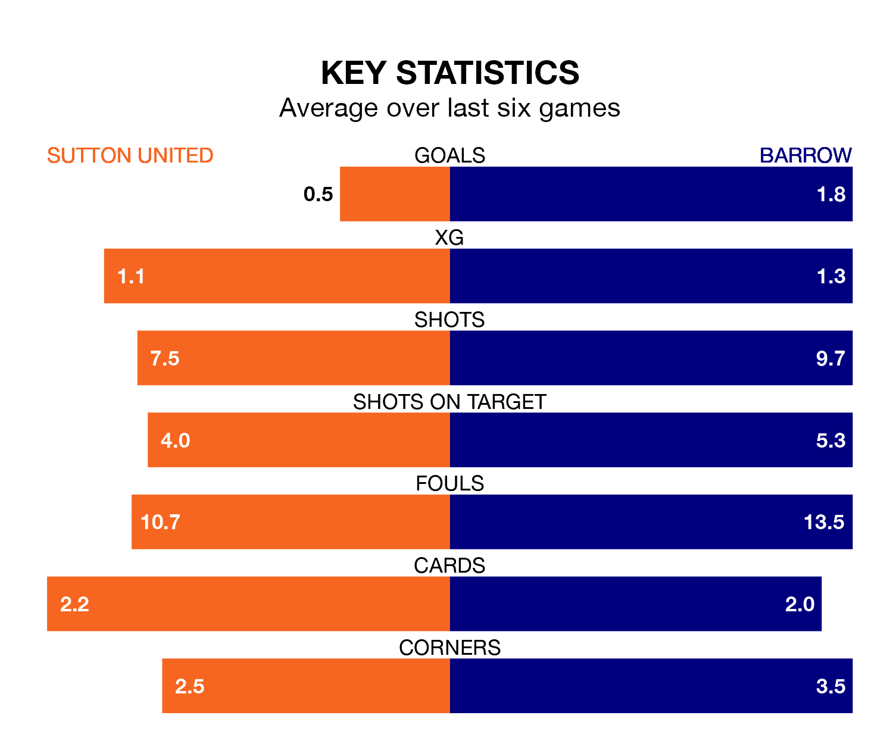

Mid-season relegation candidates Sutton United face a challenge against high-flying Barrow at the VBS Community Stadium on Saturday.
Sutton United are rooted to the bottom of the EFL League Two table, and have picked up four wins and six draws in their 25 games to date.
The Bluebirds, meanwhile, are fourth in the standings with 48 points, having won 13 and drawn nine of their first 26 matches, and are three points behind table-toppers Stockport County.
With Paul Farman between the sticks, Barrow can rely on one of the league's safest pair of hands. He has kept nine clean sheets in his 24 appearances this season in EFL League Two.
In Sutton's net, Dean Anthony Bouzanis has two clean sheets in 17 games. He has conceded a goal every 49 minutes, more than twice as often as the 103 minutes between goals for Farman.
United are in disappointing form in EFL League Two, with one win and two draws from their last six games.
With three wins and two draws over that period, the Bluebirds' form is much better – they have taken 11 points from 18, compared to the Us' five.
With 28 goals in 25 games so far this season, the hosts are the league's third-lowest scorers with 1.1 goals per game. And they are conceding more than average, letting in 52 goals at a rate of 2.1 per game.
The away team, meanwhile, are average scorers, with 1.5 goals per game. They have conceded 0.9 goals per game.
In the last five years, Sutton and Barrow have played each other on eight occasions. Sutton won two of them, Barrow four, and they drew twice.
On average, the Us scored 0.6 goals and the Bluebirds 0.9 in those matches.
Their last meeting was on August 12, when Barrow won 2-1 at home.
Sutton's last match was on January 1, a 1-1 draw against Newport County, with Olusanya Temi Fadahunsi getting the goal for the Us.
Barrow beat Tranmere Rovers 1-0 last time out, on January 6, with Dean Campbell on the scoresheet.
Saturday's match will be refereed by Paul Howard, who has taken charge of nine EFL League Two games so far this season, issuing one red card and booking 27 players. He has awarded one penalty.
The last Sutton game Howard refereed was a 3-0 away loss to Crawley Town on September 30. He is yet to oversee a match featuring Barrow this season.
Updated: 13:38 (UTC), 10/01/24